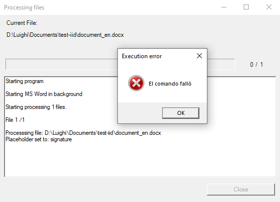
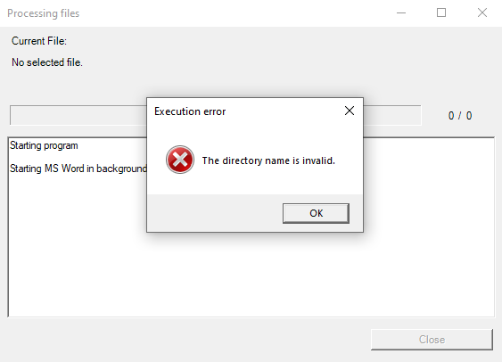
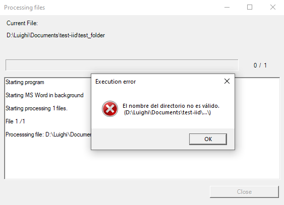
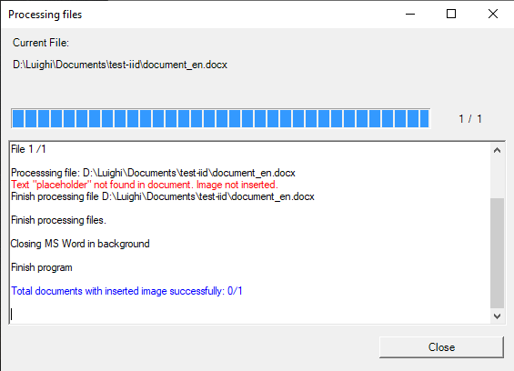
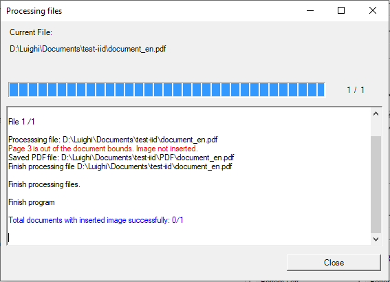

Troubleshooting
When using the software there is the probability to face some unexpected behavior. There are some circumstances that may prdduce them, and here we describe the most common.
The command failed
In the logging box, just after the placeholder is found in Word documents, it appears a message with message The command failed in a pop-up window.

Causes
This is due to opened PDF files previously generated, that will be regenerated with the software.
Solution
Close the previous PDF generated files, as it forbids the creation of a new PDF file. After you have closed them, please click on Generate again, and the file will be generated normally.
The directory name is invalid
When generating the file, just after the logging box shows that the MS Word is opened or the starting program for PDF, it shows a message: The directory name is invalid.
Case 1:

Case 2:

Causes
It is because you had a previous configuration with Files type, but changed to Folder type without selecting the corresponding folder, keeping the previous filename, or viceversa.
Solution
In the File/folder path row click on Explore to select the folder if desired, or return to the Files option and select a valid file.
Text not found, image not inserted
When trying to insert the image taking text as a reference, it shows that the text is not found even when I can see those words in the document.

Causes
If you see the text in the document and the software shows that the text was not found, it is probably because the text is not correctly written in the PlaceHolder box, or in case of PDF document, the text cannot be selected as such (it is an image containing text).
Solution
There are some alternatives you can try:
For Word/PDF documents:
- Make sure that the text is correctly written in the text box. Take care of spaces and capital letters and try again.
For PDF documents:
- Check if the text can be selected with a PDF viewer (Ex. PDF Acrobat Reader). If not, it is probably that it is an image or embedded graphic that cannot be treated as text in the document. If it is the case, consider using the reference relative to page, or try an OCR software to recognize the characters and then use this software to insert the image.
Page out of the document bounds
When using the reference Relative to page option, shows that the entered page is out of document bounds.

Causes
The entered page is higher than the maximum number of pages present in the PDF.
Solution
Check the page you are going to insert the image. Take into account that, the page number is absolute (some PDFs has different numbering style that may not correspond to the absolute page number), then you should check that the page should exist in the document.